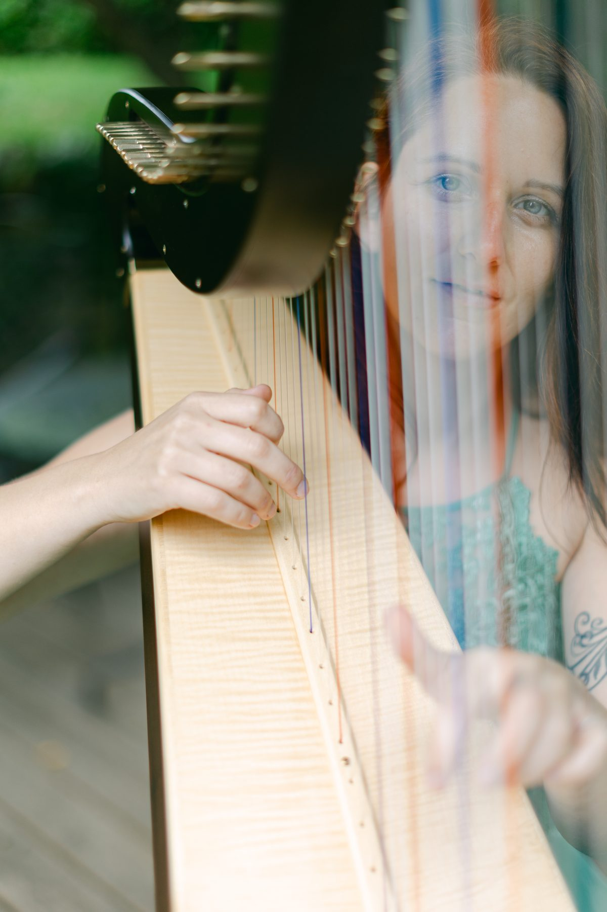

Mein besonderes Angebot für dich. Ein individuelles Musikstück, komponiert nur für dich – zum Zuhören, Liegen und Nachspüren.
Mehr erfahren
Ich spiele seit über 30 Jahren Harfe. Besonders am Herzen liegt mir die Improvisation: Ich nehme die Atmosphäre eines Raumes und der Menschen wahr und lasse daraus im Moment Musik entstehen. Für mich ist die Harfe weit mehr als ein Instrument – sie berührt Menschen, füllt Räume mit Klang und erinnert uns an die Farben der Seele. Von Graz und der Steiermark aus bin ich für dich in ganz Österreich unterwegs.
Meine Geschichte lesenEine sanfte Klangreise zum Eintauchen und Abschalten.
Nimm dir eine kleine Auszeit, bevor du mehr über mich und mein Angebot erfährst.
Von kleinen Hochzeiten in der Natur über Entspannungsangebote bis zu individuell komponierten Stücken – hier findest du einen Überblick.
Kleine Hochzeiten in der Natur, Vernissagen, private Feiern im kleinen Kreis.
Live-Begleitung für Yoga, Qi Gong, Meditation, Massagen und Klangreisen.
Entspannende Hintergrundmusik in Restaurants, Cafés und Hotels.
Begleitung für Menschen mit besonderen Bedürfnissen sowie in Pflege- und Betreuungseinrichtungen.
Personalisierte Musikstücke sowie Kompositionen für Film und Medien.
Privatunterricht und Workshops für Fingertechnik, Improvisation und freies Spiel.
Mein besonderes Angebot für dich. Du beantwortest drei Fragen, ich spüre mich hinein und komponiere ein für dich individuelles Musikstück.
Mit einfühlsamer Harfenmusik begleite ich Menschen in Zeiten des Abschieds – bei einer Beerdigung, einer Trauerfeier oder in einem persönlichen Moment der Trauer.
Ob Hochzeit, Veranstaltung oder ein Moment der Ruhe – schreib mir gerne, ich freue mich auf deine Anfrage.
Zum Kontaktformular